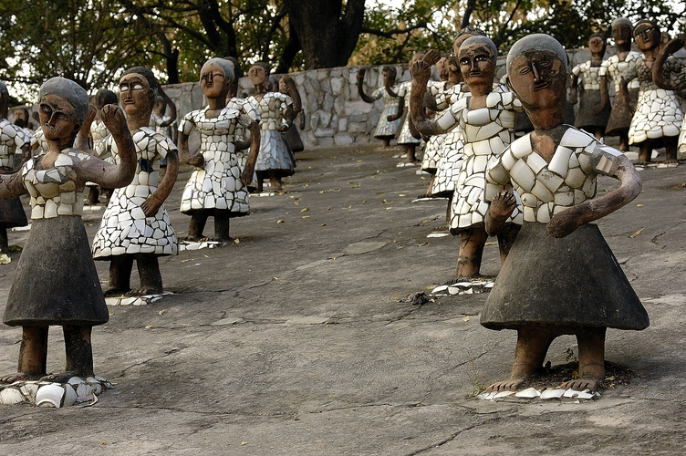

ROCK GARDEN
The Rock Garden of Chandigarh is a sculpture garden for rock enthusiasts in Chandigarh, India. It is also known as Nek Chand Saini's Rock Garden of Nathupur after its founder Nek Chand Saini, a government official who started building the garden secretly in his spare time in 1957. The Rock Garden sits near Sukhna Lake.[3] It consists of man-made interlinked waterfalls and many other sculptures that have been made of scrap and other kinds of waste (bottles, glasses, bangles, tiles, ceramic pots, sinks, electrical waste, broken pipes, etc.) which are placed in walled paths.
